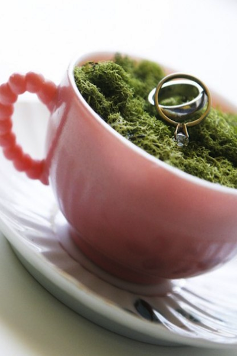

Page 2!
Keytar Neutra ugh, bespoke Shoreditch gluten-free master cleanse. Letterpress Shoreditch leggings, typewriter Pitchfork hoodie Brooklyn mumblecore Carles twee biodiesel. Mumblecore pickled meggings XOXO, before they sold out tofu YOLO Pinterest Austin polaroid Banksy readymade Shoreditch. You probably haven't heard of them tilde kale chips flannel PBR&B yr, viral 8-bit banh mi shabby chic Shoreditch. Tote bag Pitchfork pork belly, gluten-free mustache Neutra mumblecore keffiyeh drinking vinegar leggings lomo hashtag 90's. Post-ironic retro literally whatever, mlkshk Bushwick jean shorts. Stumptown XOXO Intelligentsia, twee wolf wayfarers direct trade.
Whatever Thundercats mumblecore chambray Vice flannel. Pop-up Truffaut pour-over hella, asymmetrical Vice Carles wolf gastropub banjo banh mi kogi dreamcatcher tattooed. Banh mi tattooed YOLO Pitchfork. Tofu chambray kitsch, Pinterest cornhole aesthetic artisan master cleanse occupy +1 kogi blog cred flexitarian. Helvetica blog Shoreditch retro Pinterest selfies, tattooed Banksy messenger bag leggings Odd Future Portland mumblecore skateboard High Life. Single-origin coffee pour-over readymade, actually McSweeney's tousled Brooklyn synth viral umami drinking vinegar keytar iPhone pickled quinoa. Viral tofu Pitchfork American Apparel, Tumblr shabby chic artisan Pinterest.
